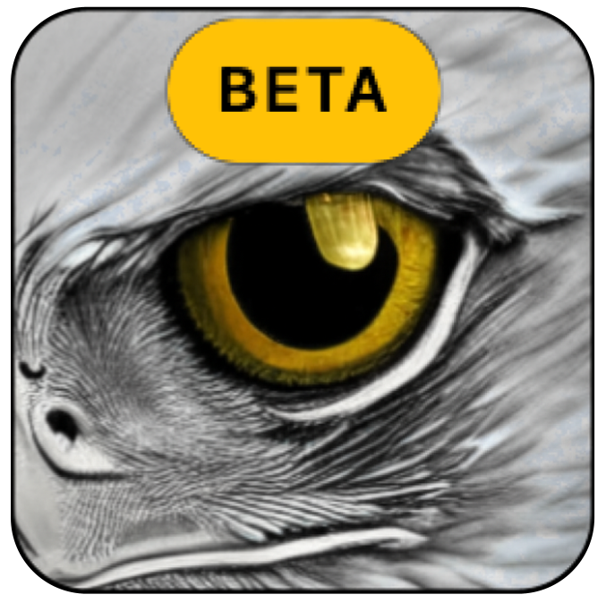

EDS-B
Eagle Dependent Surveillance-Broadcast
Broadcast your drone's
live location for free:
Download
Eagle Eyes
Legend
☰
Google Hybrid
Google Imagery
Esri Imagery
Esri Topo
Dark Theme
Light Theme
EDS-B Network:
DISCONNECTED
Acoustic estimate vector
Home point location
Drone location
Drone
EDSB locations
Detection bubble
Mesh Network
3D Flight Profile
Click and drag to rotate view
×
View Flight Logs
IMPORT FLIGHT LOGS
Sign in to view flight records
Array Status:
STANDBY
Flight Log:
PLAY
RESET
Speed:
1.0x
Flight Log Timeline
0m 0s / 0m 0s
View 3D Flight Profile
Acoustic Estimate:
PLAY
RESET
Speed:
1.0x
Acoustic Direction Estimate Timeline
0m 0s / 0m 0s
Acoustic direction estimate
Flight Log GPS Points:
0
Flight Log Total Distance:
--
Flight Log Total Time:
--
Loaded Flight Logs:
Flight Log Track:
Drone Location:
Home Point Location:
Mesh Network:
Detection Bubble:
Acoustic estimate vector:
Acoustic estimate directional indicator:
Drone Label:
Drone Altitude Label:
Home Point Label:
Distance from Home Point: